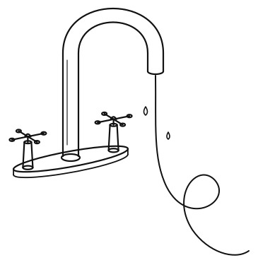

Hola, soy Nico (he/him)
Me interesa la intersección entre soberanía tecnológica, privacidad y política como herramientas para combatir la centralización del poder. Creo en las comunidades por sobre el individualismo, y en que el open source y los protocolos abiertos son la base de una era más humana. Veo en los movimientos del Software Malleable y Local-First una forma interesante de simplificar y democratizar la creación de soluciones.
Escribo todo el tiempo, a veces en algunos de estos blogs: The Open Inner Monologue y Engineering ideas and projects.
